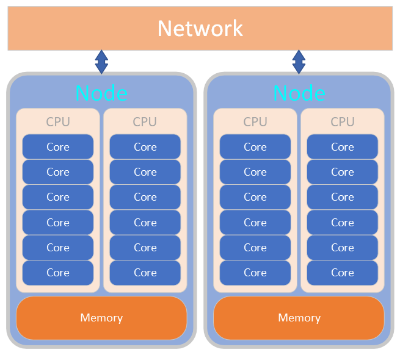

High performance computing for Digital Humanities¶
This workshop is an introduction to using High-Performance Computing (HPC) systems, using the King's College London CREATE HPC as an example.
By the end of the workshop you should be able to:
- Find and load available software
- Use Python virtual environments
- Understand what a job scheduler does and why this is important for HPC systems
- Use job scheduler commands to submit jobs and find out information about them
- Submit different types of jobs
- Use Singularity containers
What is an HPC system?¶
An HPC system is a term that usually describes a clustered network of computers. The computers in a cluster typically share a common purpose, and are used to accomplish tasks that might otherwise be too big for any one computer. Those computers might share the same, or similar hardware specifications, are usually connected via high speed networks and are backed by a fast, network filesystems.
At a very high level, those computers can be divided into the following categories:
- Login nodes
- Compute nodes
- Storage nodes
- Management nodes
Important
Login nodes should only be used for submitting jobs and running simple tasks, such as editing of your job scripts, etc

About CREATE¶
King's Computational Research, Engineering and Technology Environment (CREATE) is a tightly integrated ecosystem of research computing infrastructure hosted by King’s College London. It consists of:
- CREATE Cloud: A private cloud platform to provide flexible and scalable hosting environments, allowing researchers greater control over their own research computing resources using virtual machines
- CREATE HPC: A high performance compute cluster with CPU and GPU nodes, fast network interconnects and shared storage, for large scale simulations and data analytics
- CREATE RDS: A very large, highly resilient storage area for longer term curation of research data
- CREATE TRE: Tightly controlled project areas making use of Cloud and HPC resources to process sensitive datasets (e.g. clinical PIID) complying with NHS Digital audit standards (DSPT)
- CREATE Web: A self-service web hosting platform for static content (HTML/CSS/JS) and WordPress sites
Important
For research that has made use of CREATE, please see the Acknowledging page.
Prerequisites¶
In order to join this training workshop, you must have a terminal application installed on your computer. If you use MacOS or Linux, you will have one available by default. If you use Windows, you can use PowerShell - some commands will differ from those used on Mac/Linux.
If you are working through these materials on your own, outside a workshop, you will also need to request an account on the CREATE HPC system. Information on how to request access can be found in the CREATE documentation
References¶
The material in this course was inspired by / based on the following resources
- King's e-Research general Introduction to HPC workshop materials
- CREATE documentation
- EPCC Introduction to High-Performance Computing
- A previous iteration of this course developed at Maudsley BRC